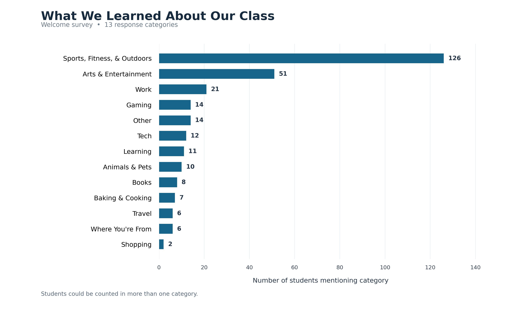
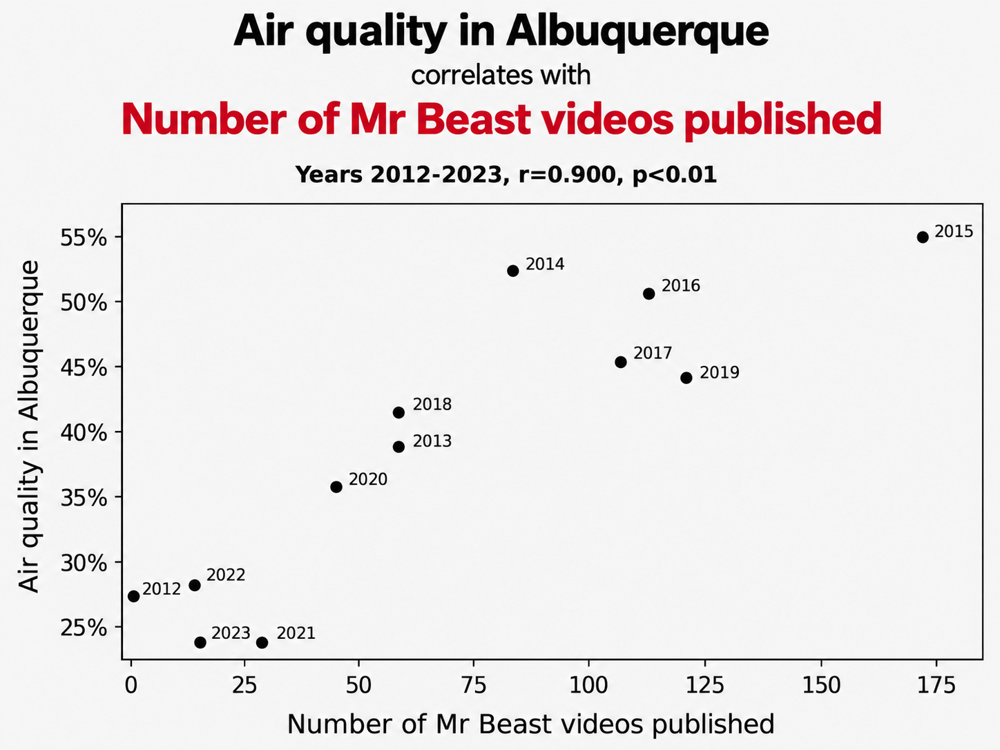

Making Relationships Visible
Explore how different graphs help us discover and understand relationships between variables.
Can you see the model?
From lecture to lab: models help us describe the world.
In lecture this week, we'll be thinking about models: simplified representations that help us understand the world. A mathematical model can describe a relationship using an equation. But first, we can look for relationships visually.
Each dot is an observation. What pattern do you notice?
Understanding variables
What kinds of information do our columns represent?
Remember from Lab 1 that R stores different kinds of values, like numbers and text? Now we'll classify variables by what their values mean.
Classify these columns from our scooter dataset: provider_name, trips,
avg_distance, day_of_week. Is each categorical, quantitative, or ordinal?
Explain one of your choices.
Bar graphs: compare categories
You know this one! Let's connect the graph to its variable types.
Welcome survey example
In the Welcome Survey, we asked you, "Tell us something about yourself that you’d like us to know. For example: a hobby, extracurricular activity, job, talent, interest, favorite thing, or anything else you’d like to share." Here's what the class responses looked like in a bar graph!

Anonymous class results go here
assets/class_interests_combined.png
What to notice: Bar graphs compare categories using a numerical value, such as a count or average. Remember the principles of alignment and repetition from our visual design lecture? Bars share a common baseline and repeat the same visual form, making it easy to compare their heights. The differences between bars are what communicate the data!
We've already used average_by() and bar_graph().
Let's review by using them to summarize trips by provider and create a bar graph.
R is still loading…
Create a bar graph comparing the average number
of available scooters across providers. Start
by summarizing with average_by().
R is still loading…
Does each bar represent a provider? Does its height show an average? Can you read the labels?
Scatterplots: look for relationships
Now return to the kind of graph we saw at the start of lab.
Scatterplot example
A scatterplot shows the relationship between two quantitative variables. This scatterplot shows a positive relationship between the quality of air in Albuquerque and the number of likes on Mr. Beast videos. This is an example of a spurious correlation (a relationship that appears real but is actually coincidental). As far as we know, the air quality in Albuquerque does not affect the number of likes on Mr. Beast videos, and the number of likes on Mr. Beast videos does not affect the air quality in Albuquerque!

Each dot represents one observation with two quantitative values. Look for upward, downward, or no obvious pattern. As you can see by this example, an association isn't automatically a cause.
How does the number of scooters available relate to the number of trips? Our
scatter_plot() helper creates the dots. Just like our
bar_graph() helper, the scatter_plot() helper
takes a dataset and specifies the columns to use for the x and y axes.
R is still loading…
Dots represent the observations; adding a line is one way to summarize their overall relationship.
R is still loading…
Do trips that are longer distances tend to have longer durations? Make a scatterplot using avg_distance on the x-axis and avg_duration on the y-axis. Do they appear related?
R is still loading…
Line graphs: follow change over time
Some relationships are about a progression (especially dates).
Lne graph example
This line graph shows...

Change over time (or another meaningful continuum)
assets/welcome_line_graph.png
A line graph connects observations in meaningful order. It's especially useful for showing changes over time.
How did the number of scooter trips change over time? Before making a line graph, we need to think about what unit of time we want to use (e.g., days, weeks, months) for the x-axis. If we include every day, the x-axis will be quite crowded and long! Instead, let's aggregate the data by month to get a clearer view of the trend.
We also need to think about the particulars of our dataset, such as multiple entries for the same date. Recall, that our dataset contains multiple provider rows for some dates. (Each row is a unique combination of provider and day.) Let's have our line graph show a separate line for each provider.
R is still loading…
Plot the total number of trips per day during May 2019. Change the month in the example above, then summarize and plot.
R is still loading…
Are dates on the horizontal axis in chronological order? Does connecting nearby dates help you see a trend?
Choose your graph!
Now you're in charge: choose a question, pick a graph, make it, and interpret it.
Choose one of the questions below. Each is different from the questions we used in the demonstrations. You may reuse the patterns from earlier code boxes.
For C, total available scooters across providers by day, then use a line graph. Daily totals describe scooters reported available across providers; they are not individual unique scooters.
R is still loading…
Your graph should match your variables and question. Make sure it actually rendered, check axis labels, and describe a real pattern rather than simply naming the graph type.
Save your work
Download a PDF containing your Try code, output, graphs, and written answers. Upload it to the Lab 3 assignment in Canvas.
Run each Try activity before downloading. The teaching animations and instructor example images are not included in the student submission.